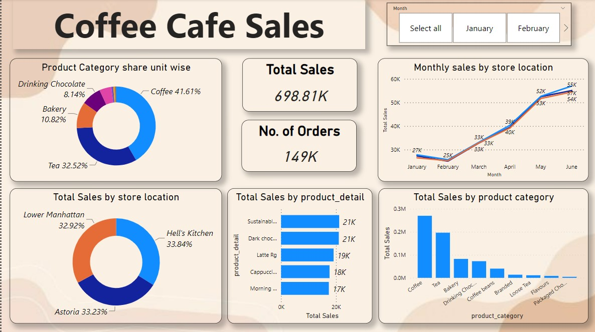
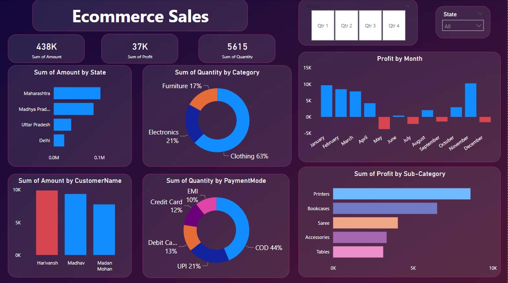

About me
I am an enthusiastic aspiring Data Analyst equipped with a robust background in data processing and analysis. My skill set includes
proficiency in SQL, Power BI, and Excel, all of which I have honed to extract meaningful insights from complex datasets. My goal is
to continuously evolve and elevate my abilities while leveraging data-driven insights to drive effective solutions.

•Led comprehensive data analysis initiatives, handling a dataset of 1.5 lakh rows using SQL, resulting in the creation of an
insightful dashboard.
•Identified and highlighted the busiest days of the week, revealing a significant uptick in customer activity during weekends.
•Executed a thorough evaluation of product performance, identifying the top three highest and lowest revenue-generating items.

•Developed an interactive sales tracking dashboard for comprehensive analysis of online sales data.
•Established connections, integrated new tables, and performed calculations to manipulate data, facilitating user-driven
parameters for diverse visualizations.
•Utilized a range of customized visual eleme

•New menu was launched. So, analyzed the performance of new menu items to gauge their impact on overall sales and customer
preferences.
•Conducted analysis to determine the top categories preferred by customers, informing strategic menu planning and marketing
initiatives.
•Investigated and presented insights on the top 5 largest orders, contributing to targeted marketing and upselling strategies.